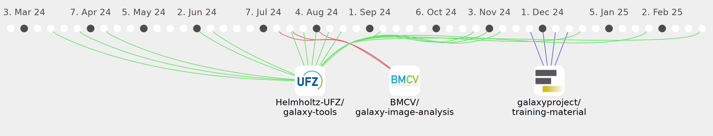

rmassei

Commits all-time: 104
Commits last year: 97

(74)
- e0da30f
- 07dedde
- 4fe6ef4
- df9eb07
- d4ba79f
- 72be87b
- 1a0a5b4
- 867640a
- ba62877
- 23d399c
- 60e2703
- 0266e7b
- 3185754
- 886d798
- da150f1
- c95beb8
- 1276168
- 78a823e
- d8fc43f
- 254ad5b
- 7ed1cbc
- 10ded9a
- 7cd95d5
- a42ac48
- 1b21437
- 5edf81c
- 204c02c
- 6862d6a
- b634b5a
- 5cb76db
- 2833620
- eed0a4c
- 2046c32
- 1814b7b
- 1ec74bd
- 5c4d67d
- ab75c9f
- 983cef6
- 403e9d3
- 2e0c2b2
- b0edfe2
- a7cce18
- 921f231
- 5ab85ed
- dfb3968
- b1bdff2
- 8112796
- defca48
- f1b4974
- e1ac37c
- 59fa80b
- 03393d2
- 3f6478c
- a4d5d5d
- 3e510a0
- a9011d7
- c6206ba
- 70ba9ab
- 3ab918e
- f3824dd
- caf07f2
- d670501
- 0b8275e
- f89fda0
- 54942fe
- 19d84fd
- d69e684
- 8b68231
- 2e75a14
- 636cbb6
- 61a3d9a
- 707eca8
- 214b8d4
- a4aa152
(13)
(10)